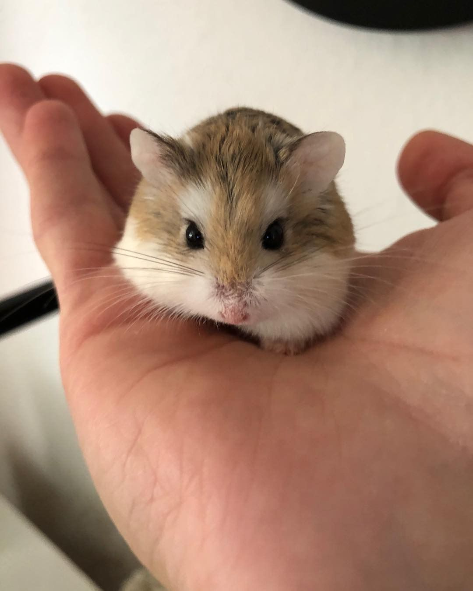
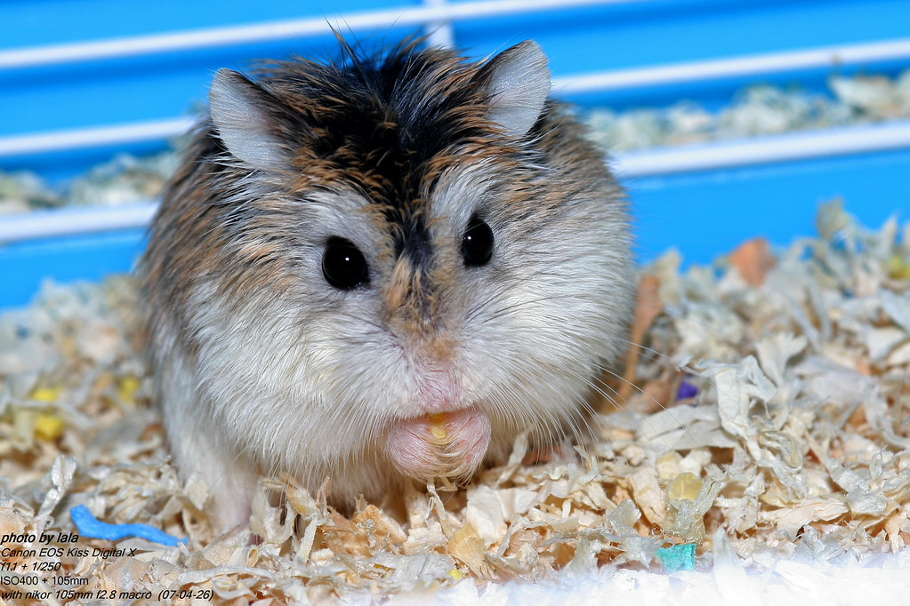
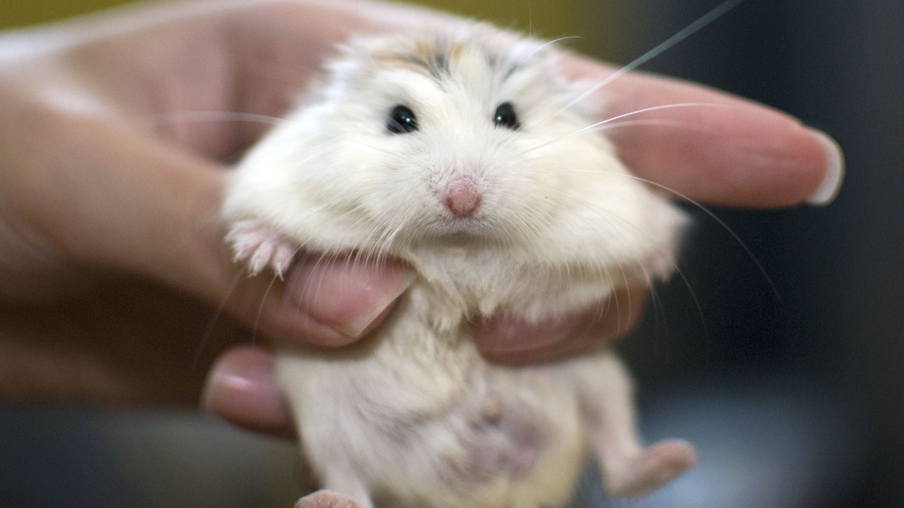
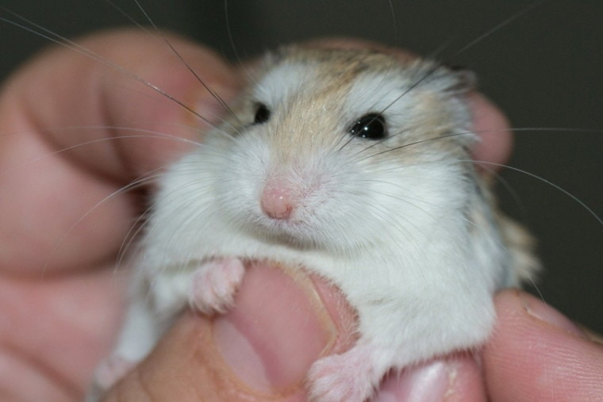

羅伯羅夫斯基倉鼠 (Roborovski Hamster)/沙漠侏儒倉鼠
俗稱：小毛足鼠、老公公鼠、老婆婆鼠
身長：約3.8~5cm
體重：約15~30g
壽命：約3~3.5年
主要分布於哈薩克斯坦、俄羅斯、戈壁沙漠等周邊地區。
個性：容易受驚嚇，需要安靜環境。不太喜歡親近人類，飼養者需要花時間及耐心培養感情。
習性：不僅是世界上體型最小的寵物倉鼠，也是移動速度最快的。可以接受和有血緣關係的同伴共同生活。合籠機率較其他品種高。
